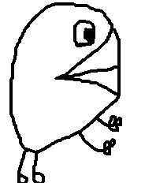

- Instead of being "nice", just be kind; and true to yourself and the world surrounding you
- Low focus/organization, but high creativity in contrast
- Lateral thinker: generalist instead of specialist (sometimes my instincts are proved right)
- The noobs/beginners and the lighthearted always wins
- Newbie in programming languages, experienced programmer in visual event-sheets and Bash (and trying to tame AI to program in "complex" langs such as Flutter, ReactJS and Solidity on my behalf, principally the CursorIDE).
- The false "open-minded" ones thinks otherwise, but: the true open-minded ones do understand why there is the right and the wrong. Believing in the moral relativity is what the narcisistic always do to make themselves "free" - of rules, of course, such as being obliged to eat and exist and pretending to be happy with it
- Texts are better than videos when I'm in a rush
- Infographics consumer, datamaniac: I "folderstamp" my files and folders constantly, and auto-commit from my Desktop to even my Home folder
- Loves to drink juicy stuff. This applies to food too, and that's why I'm passionate about pitayas
book My README.md
Managing these organizations:


 + more to come? Hope I don't get stuck w/ more unfinished projects 🙏
+ more to come? Hope I don't get stuck w/ more unfinished projects 🙏
My diverse creativity is used for creating things that I find missing and can be useful for the humankind.
From a simple music to a complex Linux distro: the different things I create, surprisingly, can have no relating to each other. I can't get focused in a single project for more than 4 days: I move to a new and totally new different project. I used to be better giving ideas to projects than working on them, but nowadays I got more experience thanks to Bash, AI and better learning the languages' syntax logic. I start my projects as virtual notes or draws in papers. I used to turn they into reality using a browser to design structure, and the Construct 2 game engine to "program" (nowadays the GPT-powered CursorIDE helps me a lot). I like to create things, and I'm pleasured because people can be happy and have their lives simplified/securitized by using these stuff.
My name is Daniella Mesquita. Born in 1997, April 9 21:05 -0300, as Daniell Wilson José Mesquita. Since when a very little kid I create things: my first was a whale character called "PRB" aka "Zocca" (in 2013 inspired the Tamigucho Dewhale).

Also when a kid I started thinking in a store selling terrariums and bugs, and I put a businness board in front of our house and created the design of a food for ants using leaves and grains. Some neighbors laughed and called me "retarded". In the same epoch I thought in creating a mini city for other kids, and I created a cardboard computer, operated by humans using papers in the "screen".

Related sites


 My Nimi profile
My Nimi profile